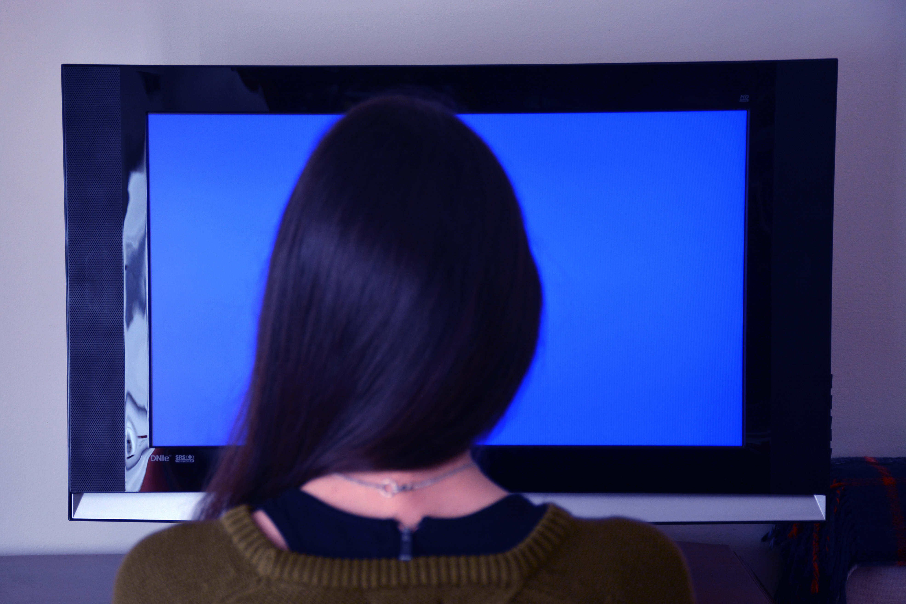

p.17


Video
Television, the most powerfull medium of out times has only been used so far to convey simple messages to the largest possible audience, shaping the minds of millions to serve the purpose of a happy few. Broadcast TV, as we know it, programs for the lowest common denominator, filling our screens with what has been described by network executives as the “least objectionable programming”.
We decided not to evaluate any specific video products for two reasons:
“I feel a sense of purpose and connectedness when on the system and even if I haven’t been on in a while (2 days) I miss using it. I have encountered an entire new world of good people. I find it more important than the tele- phone (which I never use), the TV (even less use), the radio Oots of use) and even (self-horror) the on-campus computers (constant use). Is the network addictive? Perhaps regulatory measures are necessary to keep people from becoming addicts and ruining (enhancing?) their lives. Or perhaps there are pre-addiction symptoms that the computer can look for. I don’t know. I only know that I have been awake on-line for twenty-five hours now and my last experiment died horribly. It is going to be a long night.”
(1) There is such an abundance of similar but distinct pieces of hardware and software in the market today that a proper review would take more space than we could ever have;
(2) by the time you get this book, our selections may well be outdated, considering the present pace of technological development.
Furthermore, these publications listed below will do a much better job than we could in guiding you through the ever-expanding video jungle.